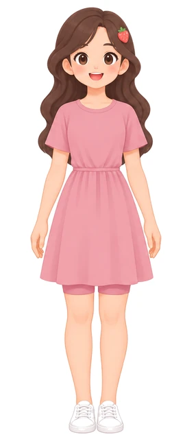

坐久了就起來動一下，每動一次，盆栽就長一片葉子。
—
連續活動 0 天
距離下次起身
40:00
按「開始坐著」計時
Sitting timer・久坐計時器
準備好了就開始
時間到會響鈴並跳出提醒，帶你做 3 分鐘膝蓋友善運動，或離開座位走一走（下方可以選）。每 20 分鐘也會提醒眼睛看遠方 20 秒。
多久起身一次？
時間到，我想…
示範角色
背景配色
Today's pot
今天的盆栽
0 / 8 次
種子

完成第一次起身運動，種子就會發芽。
今天活動0分鐘起身運動累計時間
粗估消耗0大卡依每個動作強度計算體重 kg
護眼休息0次看 6 公尺外 20 秒
喝水 0 / 8 杯，一杯約 250 ml
離開座位走走Walk break
真的站起來、離開桌子走一圈。順路完成一兩個小任務，回到座位就算一次，盆栽一樣長葉子。也可以在計時器設定「時間到就走走」或「運動、走走輪流」。
要走多久
順路小任務
選一組來動Routines
粉框是下一組輪替。每組都不跳、不深蹲，膝蓋會痛的人也能做。
坐著就能動Chair sets
不用離開椅子，開會、追劇、打字的空檔都能做。動作越做越熟，也可以挑喜歡的單獨練。
How to use・怎麼使用
四個步驟，坐著也能照顧身體
點一下試玩看看
小提醒：網頁要一直開著（可以放在旁邊的視窗）；第一次要先按一下任何按鈕，瀏覽器才會允許播放聲音。
運動庫17 moves
全部是低衝擊動作。每張圖會在「開始」和「結束」兩個姿勢之間切換。
Body map・身體地圖
哪裡卡卡？點一下找動作

Lucky draw・今天練什麼
不知道做什麼？抽一個！
？？？按下面的按鈕抽籤
四週計畫Four weeks
從「每天記得起身」開始，慢慢加到每週快走。減重主要靠吃，運動負責讓膝蓋有力、讓你有精神。
Quest map・四週闖關
完成任務，蓋上印章
A day・一天的節奏
A week・一週安排
身體筆記Notes
針對你提到的三件事：站起來膝蓋痛、眼睛模糊、體重增加爬樓梯會喘。
Daily check-in・今天身體感覺
花 5 秒記一下
Calories・熱量紀錄
這 7 天動掉多少大卡
依每個動作的強度（MET）× 體重 60 kg 估算，體重可在「今日統計」修改。一杯全糖珍奶約 500 大卡，起身運動是幫忙，不是全部。
True or false・是非小測驗
你答對幾題？
Drink calculator・飲料換算
這杯要起身幾次？
翻翻小常識Flip cards
點卡片翻面，看看答案。
這裡的內容是一般保健建議，不能取代醫師診斷。運動時如果不只是「有點痠」而是會痛，就停下來；有下面任何警訊，請先就醫再開始運動。